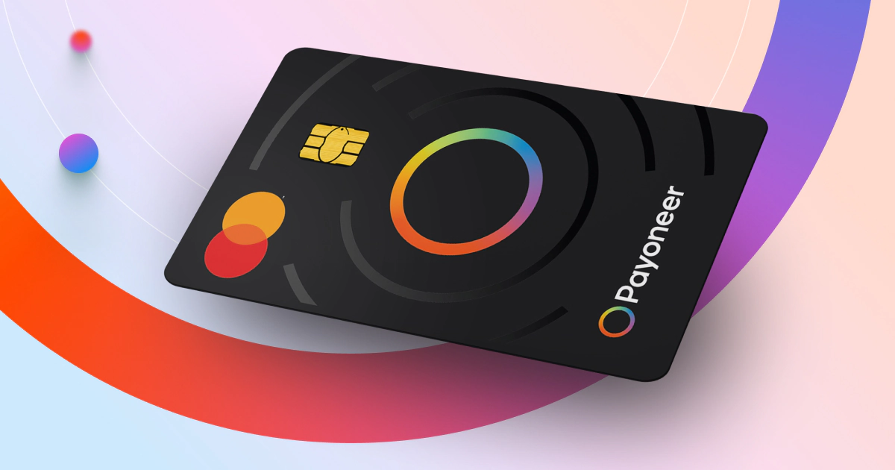

Payoneer Soomaaliya: Qaabka Loo Helo iyo Sida Loo Isticmaalo
Hagaha dhabta ah ee Soomaalida u shaqaysa online
Dunida maanta, shaqooyinka online-ka ah iyo dakhliga laga helo internet-ka ayaa si xawli ah u kordhaya. Soomaaliduna kama harin tartankaas. Laakiin caqabadda ugu weyn ee jirta waa: sidee lacagta online-ka ah loogu qaataa Soomaaliya?
Halkaan ayay Payoneer muhiim ku noqotaa. Qoraalkan wuxuu si faahfaahsan kuu sharxayaa sida Payoneer looga helo Soomaaliya, sida loo isticmaalo, iyo waxa ay dhab ahaantii kuu qaban karto.
Waa Maxay Payoneer?
Payoneer waa shirkad caalami ah oo bixisa adeeg lacag-qaadasho (payment service) oo u oggolaanaya dadka ka shaqeeya internet-ka inay helaan lacag ay ka kasbadeen:
- Freelancing
- Google AdSense
- Amazon & eCommerce
- Shirkado caalami ah
Payoneer waxay kuu abuurtaa bank account caalami ah adigoo jooga Soomaaliya.
Payoneer Ma Ka Shaqaysaa Soomaaliya?
Haa, Payoneer waxay si buuxda uga shaqaysaa Soomaaliya. Inkastoo bangiyada caalamiga ah aysan si toos ah u shaqayn, Payoneer waa xalka ay Soomaalidu ugu badan tahay maanta. aniga kula hadlayo maanta waxaan leeyahay akoon payoneer oo shaqaynaya wuxuuna iigu samaysan yahay somaaliya marka wax walbo oo aan kuu sheegayo waa sax
Kumannaan Soomaali ah ayaa Payoneer u adeegsada: AdSense, Upwork, Fiverr, YouTube, iyo shaqooyin kale oo online ah.
Sidee Loo Sameeyaa Account Payoneer Ah?
Tallaabooyinka Diiwaangelinta
- Tag website-ka Payoneer
- Riix “Sign Up”
- Dooro “Individual”
- Geli magacaaga saxda ah
- Geli email & password
- Dooro waddan (Somalia)
⚠️ Magaca aad gelinayso waa inuu la mid noqdaa aqoonsigaaga (ID ama Passport).
Waa Maxay Waxyaabaha Loo Baahan Yahay?
- Gmail shaqaynaya
- Aqoonsi (ID / Passport)
- Lambar taleefan
- Address (xitaa mid fudud waa la aqbalaa)
Mararka qaar Payoneer waxay ku weydiin kartaa verification dheeri ah, taasoo caadi ah.
Sidee Payoneer Lacag Loogu Helaa?
Marka account-kaaga la ansixiyo, Payoneer waxay ku siinaysaa:
- US Bank Account
- EU Bank Account
- UK Bank Account
Account-yadan waxaad ku xiran kartaa: Google AdSense, PayPal (qaarkood), Upwork, Fiverr, iwm.
Payoneer + Google AdSense (Soomaaliya)
Tani waa meesha ay dad badani Payoneer u isticmaalaan.
- Gal Google AdSense
- Tag Payments
- Ku dar Bank Account cusub
- Geli Payoneer US bank details
Marka AdSense lacag dirto → Payoneer ayaa qabata.
Sidee Lacagta Payoneer Looga Qaataa Soomaaliya?
Qaababka ugu badan ee Soomaalidu isticmaasho waa:
- Payoneer → EVC Plus
- Payoneer → Zaad
- Payoneer → Bangi maxalli ah
- Payoneer → Qof kale (exchange)
Waxaa jira dad iyo shirkado gudaha ah oo Payoneer ka beddela lacag caddaan ama mobile money.
Payoneer Card Ma La Helaa Soomaaliya?
Haa, Payoneer waxay bixisaa MasterCard. Laakiin:
- Mararka qaar shipping-ku wuu adkaan karaa
- Dadka qaar waxay u diraan address dibadda ah
Card-ku wuxuu kuu oggolaanayaa inaad: ATM ka qaadato ama online wax ku iibsato.
Khaladaadka Laga Fogaado
- Magac khaldan
- Document been ah
- Multiple accounts
- Inaad u isticmaalto wax sharci darro ah
Payoneer waa system adag; haddii la xadgudbo, account waa la xiraa.
Gunaanad
Payoneer waa xalka ugu macquulsan ee Soomaalida online ka shaqaysa. Haddii aad rabto AdSense, freelancing, ama ganacsi online, Payoneer waa aalad aan laga maarmi karin.
Qofkii si sax ah u isticmaala Payoneer, wuxuu yeelan karaa dakhli caalami ah isagoo jooga Soomaaliya,daqligaas oo kaga imaanayo dunida meel walbo oo uu shaqo ka qabto marka saaxiib waxaa la joogaa waqtigii aad naftaada iyo daqligaada intaba aad hormarin lahayd maanta dunidaan aan joogno wax aad ku marmarsiyooto ma jiraan,istaag oo fadhiga ka kac .